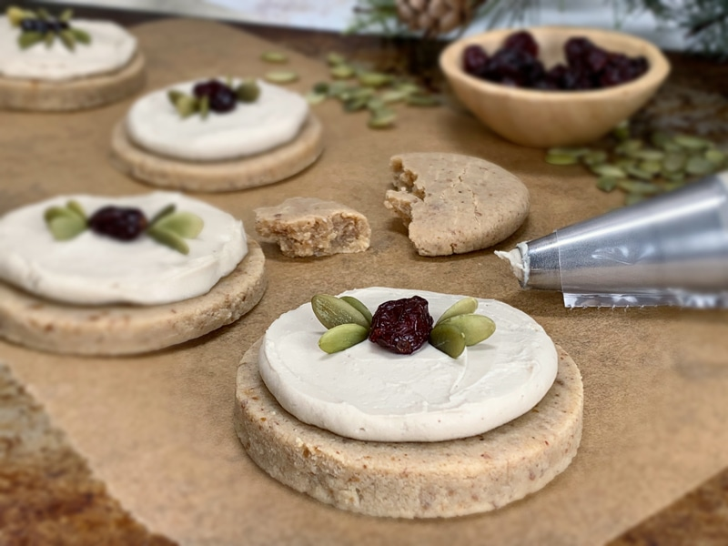
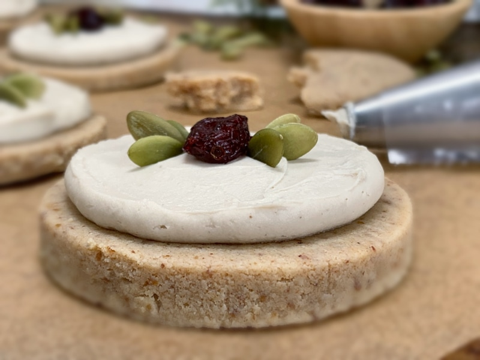

EggNog Cream Cookies
~ raw, gluten-free ~
Celebrate the holidays with a cup of eggnog transformed into a cookie. They are rich, chewy, and delicious. In the midst of Christmas season, Raw Nog Creams sounded perfect for the occasion. After I had them all decorated my husband walked by and said, “Hey, those look like cat whiskers. Hmm, so much for the holiday theme. I am trying to squeeze that image out of my head. hehe

Personally, I think they turned out adorable and festive. Although I will admit I now see the “cat” in them, I don’t want to admit that to him. Haha. I made them for our Christmas Eve gathering this evening, and they were well received. They are sure to go on the list of goodies to make come next Christmas season.
Nutmeg Essential Oil
Below I listed the amount of nutmeg to use in either ground dried form or in oil. I want to touch base as to why I prefer using essential oils over dried when I can. Essential oils are more potent than dried and fresh herbs. Unlike dried herbs, which lose a majority of their healing nutrients during the drying process, therapeutic-grade (not aromatherapy grade, there is a significant difference between the two) oils do not.
Oils are much more potent… A little goes a long way. Add one drop, stir and taste. Repeat until you’ve reached your desired result. Just to show you, (even though we aren’t using a herb here) they are so concentrated that only 1-2 drops of essential oil are equivalent to 1 – 2 oz of dried herbs.

Nutmeg has a sweet, warm, spicy scent and taste that transforms this cookie into the realm of eggnog flavors. But that isn’t the only reason I reach out to this spice. While nutmeg is only a spice that is used sparingly in recipes, it can still impact your health in a variety of ways. According to the Essential Oil Reference Guide, nutmeg “has an adrenal cortex-like activity that helps support the adrenal glands for increased energy.” The list of benefits is quite long, but this one alone was enough to stop me in my tracks.
Another added perk is that it doesn’t just benefit you if taken internally. The aromatic effect is known to bring encouragement and spontaneity. So don’t forget to take full advantage of this wonderful spice.
P.S. I have included a baking option for those of you who don’t own a dehydrator. You are still light years ahead of purchasing commercially processed cookies. So I am proud of you for being here. I do recommend in time that you invest in one as it will open up a whole new culinary world to you. :) I first released this recipe on Dec. 25th, 2010! I thought I would bring up in rank because some of these older recipes get lost. It is so yummy, and I hate to see that. I highly recommend the nine tray Excalibur dehydrator.
 Ingredients:
Ingredients:
Yields 5.5 (1/4 cup each) cookies
Cookies:
- 1 cup (126 g) raw cashew flour
- 1/2 cup (53 g) raw almond flour
- 1/2 tsp (2 g) ground nutmeg or 3 drops essential nutmeg oil, to taste
- 1/4 tsp (2 g) Himalayan pink salt
- 1/4 cup (85 g) date paste
- 2 Tbsp (23 g) water
- dried cranberry pieces and pumpkin seeds for decorating
Vanilla Cream Frosting:
Preparation:
Cookies:
- In a food processor, fitted with an “S” blade, combine the cashew & almond flour, salt, and nutmeg.
- Use a glass or ceramic bowl when mixing your ingredients if you chose to use the essential oil. If you use plastic, the essential oil will seep into the plastic and ruin it.
- Since essential oils tend to have different viscosity levels, don’t drop the oil directly into your mixture. Drop the required amount on a spoon and then into your mixture to ensure you have the proper amount.
- Add date paste and process. Process until the reaches a cookie dough paste texture.
- Add the 2 Tbsp of water only if needed. This will always vary depending on moist your date paste is.
- Place the cookies on non-stick dehydrator sheets and dry at 145 degrees (F) for 1 hour, then reduce to 115 degrees (F) and continue to dry for 10+ hours.
- Partway through, once dry enough, transfer the cookie to the mesh sheet for the duration of the dry time.
- Please use the dry times as a guide as it can vary from machine to climate.
- Once cooled, store or frost, then place in an airtight container for 1 week
- Frost with raw whipped icing and decorate with dried cherry pieces and pumpkin seeds.
Baking option:
- Preheat the oven to 350 degrees (F).
- Line a baking sheet with parchment paper and place the cookies at least 1” apart. These cookies won’t flatten while they cook, you will need to help them by slightly flattening them with your fingers.
- Bake for about 15 minutes. Often ovens run at different temperatures regardless of what the dial says so please check in on the cookies about every 5 minutes for the first batch. Document the time it takes for the next tray or batch.
- The baked version cooked up nice. They were firm on the outside and chewy on the inside.
Vanilla cream frosting:
- After the cashews are done soaking, drain, and discard the soak water.
- In a high-powered blender combine the cashews, coconut milk, honey, lemon, vanilla, and salt. Blend until creamy. No grit should be detected.
- Add the Irish moss and blend until incorporated. Do not over blend; this can break down the structure that Irish Moss adds to the recipe.
- If you don’t have or want to use Irish Moss, replace it with more soaked cashews.
- With a vortex going in the blender, drizzle in the coconut oil, and then add the lecithin. Blend just long enough to incorporate everything together. Don’t over-process.
- What is a vortex? Look into the container from the top and slowly increase the speed from low to high, the batter will form a small vortex (or hole) in the center. High-powered machines have containers that are designed to create a controlled vortex, systematically folding ingredients back to the blades for smoother blends and faster processing… instead of just spinning ingredients around, hoping they find their way to the blades.
- If your machine isn’t powerful enough or built to do this, you may need to stop the unit often to scrape the sides down.
- Store any excess frosting in an airtight container in the fridge for up to two weeks. (roughly)
Culinary Explanations:
- Why do I start the dehydrator at 145 degrees (F)? Click (here) to learn the reason behind this.
- When working with fresh ingredients, it is important to taste test as you build a recipe. Learn why (here).
- Don’t own a dehydrator? Learn how to use your oven (here). I do however truly believe that it is a worthwhile investment. Click (here) to learn what I use.
Raw version…
© AmieSue.com